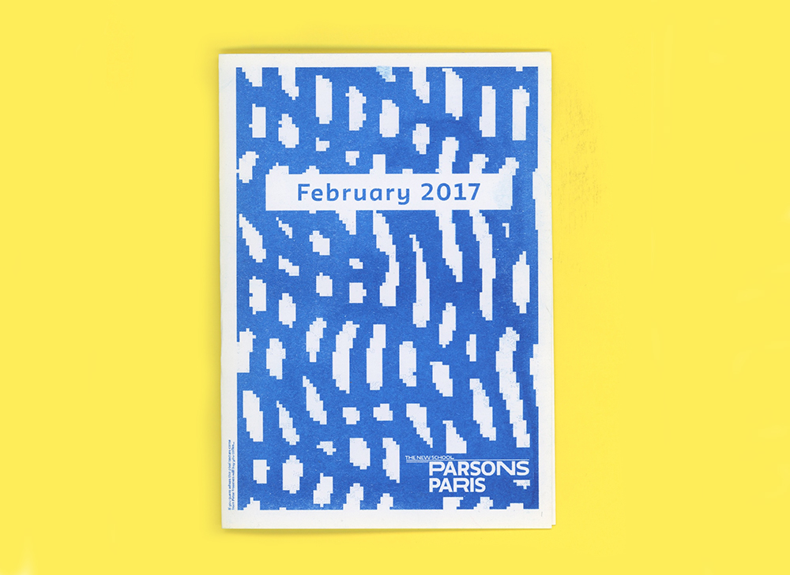
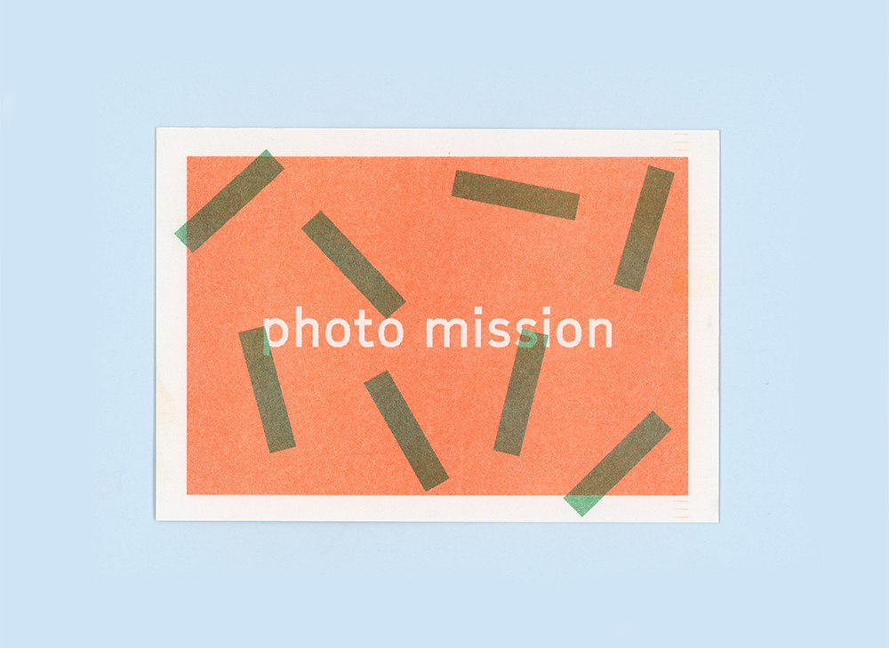
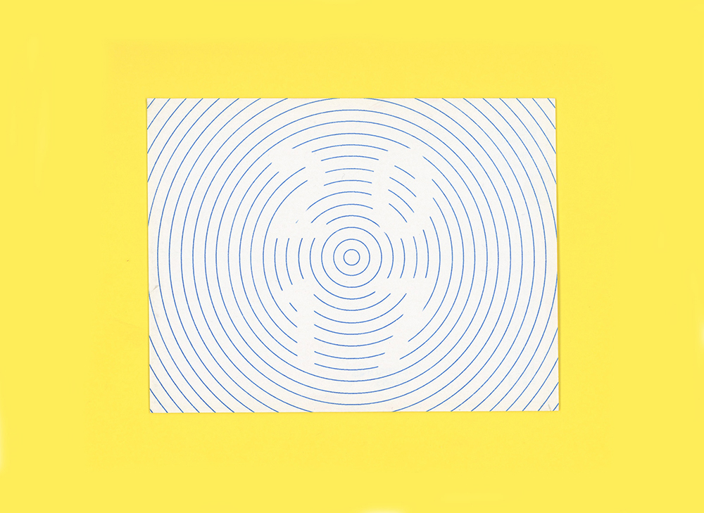

Risograph Printed Matter
The risograph printer is unique in that it creates a screen for every layer that is represented. Pure-tone soy-based inks are then pushed through this image to produce the simple, yet great effects. Here are a few samples of some projects that involve this wonderful printer.


